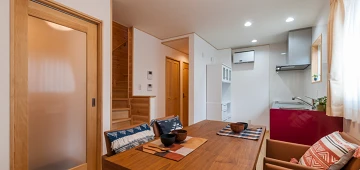
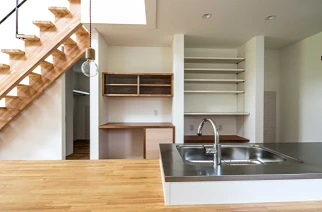
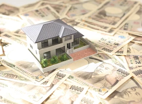

夏は涼しいアイノスの家
こんにちは。富山で自然素材にこだわるホンモノの家、フジ創アイノスです。 富山は猛暑の日が続いています。 熱中症警戒アラートが発表されました。 外出をなるべく避けたり、室内をエアコンなどで涼しくして過ごして、熱中症にならな
続きを読む →FUJISOU AINOS JOURNAL
家づくりのこと、暮らしのこと。
日々の想いを、お伝えします。
家づくりについて 556件 ／ 新しい記事から 9・24ページ
こんにちは。富山で自然素材にこだわるホンモノの家、フジ創アイノスです。 富山は猛暑の日が続いています。 熱中症警戒アラートが発表されました。 外出をなるべく避けたり、室内をエアコンなどで涼しくして過ごして、熱中症にならな
続きを読む →こんにちは。富山で自然素材にこだわるホンモノの家、フジ創アイノスです。 もう1つ見直していただきたい固定費が、 『家づくりにかける費用』 です。 例えば、iDeCoに掛けるお金が毎月23,000円足りなかったと仮定して、
続きを読む →こんにちは。富山で自然素材にこだわるホンモノの家、フジ創アイノスです。 家を建てても、お金の不安なくずっと暮らし続けていただくためには、家づくりをキッカケにコツコツとお金を増やしていくことが大切です。 お金を増やしていく
続きを読む →
こんにちは。富山で自然素材にこだわるホンモノの家、フジ創アイノスです。 大きな家は、広々として気持ちがよく、スペースが多いのでインテリアを楽しめる、といった魅力があります。 コンパクトな家にも、メリットはたくさんあります
続きを読む →
こんにちは。富山で自然素材にこだわるホンモノの家、フジ創アイノスです。 弊社では、家族の健康を守れるよう、自然素材にこだわった家づくりを行っています。 「自然素材の家は高い」、というのが一般的ですが、例えばまだ貯金や収入
続きを読む →
こんにちは。富山で自然素材にこだわるホンモノの家、フジ創アイノスです。 ▼床面積を増やすと？ 床面積が増えれば、その分家の価格も高くなってしまいます。 同時に、余ったスペースになにかを置こうとしてしまうため、逆に家が散ら
続きを読む →こんにちは。富山で自然素材にこだわるホンモノの家、フジ創アイノスです。 家の価格を抑えるためには、出来るだけ家をコンパクトにすることが重要なポイントとなります。 とはいえいざマイホームを建てるとなると、たくさんの希望が出
続きを読む →
こんにちは。富山で自然素材にこだわるホンモノの家、フジ創アイノスです。 東日本大震災以降、地震は決して他人事じゃないようになりました。 住宅業界では、耐震によりいっそう配慮しつつ家づくりを行うようになりました。 例えば、
続きを読む →
こんにちは。富山で自然素材にこだわるホンモノの家、フジ創アイノスです。 ✔︎収納の正しい考え方 前回お話ししたように、収納を『床面積』で判断してしまうと、それに連動してコストが上がってしまうことになります。 しかし、それ
続きを読む →
こんにちは。富山で自然素材にこだわるホンモノの家、フジ創アイノスです。 これまでお伝えさせていただいてきたように、家は出来るだけミニマムにつくるのがおすすめです。 その最も大きな理由は、もちろん『コスト』なのですが、今回
続きを読む →
こんにちは。富山で自然素材にこだわるホンモノの家、フジ創アイノスです。 7月24・25日に高岡市内免でオープンハウスを開催します。 その見どころを紹介します。 ◆自然素材 「無垢の床材」「漆喰塗の壁」「無垢材張りの壁」な
続きを読む →
こんにちは。富山で自然素材にこだわるホンモノの家、フジ創アイノスです。 前回の続きで、家の面積を10帖分縮める考え方をお話しします。 例えば、『廊下』は、必要不可欠なものでしょうか。 意識せず間取りをつくってしまうと、案
続きを読む →こんにちは。富山で自然素材にこだわるホンモノの家、フジ創アイノスです。 多くの方が、自分が建てるお家の基準を坪数で判断してしまいますが、その基準に沿って家づくりをしようとすると、家の予算オーバーを招きやすくなります。 そ
続きを読む →
こんにちは。富山で自然素材にこだわるホンモノの家、フジ創アイノスです。 ✔︎そもそも予算を圧縮して、いい家が建つのか？ と多くの方がお感じになるでしょうし、その不安から家づくりを諦めてしまうかもしれません。 あるいは、そ
続きを読む →こんにちは。富山で自然素材にこだわるホンモノの家、フジ創アイノスです。 家づくりの予算は、自己資金が多いか少ないかによって大きな差が生まれます。 例えば、家づくりの総予算が3500万円だとしたら、自己資金が1000万円あ
続きを読む →こんにちは。富山で自然素材にこだわるホンモノの家、フジ創アイノスです。 ウイルスから私たちを守ってくれるのが「免疫力」です。 免疫力を上げるために大切なことの一つに「適度な睡眠」があります。 本当の睡眠とは、「心も体も休
続きを読む →
こんにちは。富山で自然素材にこだわるホンモノの家、フジ創アイノスです。 "資金計画は家づくりの要" 前回お伝えしたように、家づくりには土地や家以外にもさまざまな経費がかかるため、また、それらの費用がご家族によって全然違う
続きを読む →こんにちは。富山で自然素材にこだわるホンモノの家、フジ創アイノスです。 前回お伝えさせていただいたように、事前に資金計画をしていないまま土地を探してしまうと、予算オーバーする可能性が高くなってしまいます。これは土地に限ら
続きを読む →
こんにちは。富山で自然素材にこだわるホンモノの家、フジ創アイノスです。 土地を探す前に、資金計画をしてなかったとしたらどうでしょうか。 住みたいと考えている地域の土地相場が1000万円ぐらいだとしたら。 そして友人・知人
続きを読む →こんにちは。富山で自然素材にこだわるホンモノの家、フジ創アイノスです。 家づくりの進め方を間違えてしまうことは、住宅ローン選びを失敗する大きな要因となります。ですので、まずは家づくりの正しい進め方を知ることから始めましょ
続きを読む →こんにちは。富山で自然素材にこだわるホンモノの家、フジ創アイノスです。 今日は七夕です。笹飾りをあちこちで見かけて癒されますね。 今年はコロナ禍のために、日本海側随一といわれる戸出七夕まつりは中止となり、非常に残念です。
続きを読む →
こんにちは。富山で自然素材にこだわるホンモノの家、フジ創アイノスです。 ✔︎金利の低さのみにフォーカスしてしまうと・・・ 固定型と変動型では金利差が0.3％〜0.6％ぐらいあるため、これを毎月の返済額に試算してみるとけっ
続きを読む →こんにちは。富山で自然素材にこだわるホンモノの家、フジ創アイノスです。 住宅ローンを選ぶ時は、出来るだけ金利が低い銀行や商品にすることを心がけるべきなのですが、とはいえ金利の低さだけに着目してしまうと、選ぶべきではない商
続きを読む →
こんにちは。富山で自然素材にこだわるホンモノの家、フジ創アイノスです。 住宅ローンの選び方について、例を挙げて見てみます。 例えば、Aという銀行では、最初の10年間の金利が0.5％で、11年目以降の金利が0.85％だと仮
続きを読む →